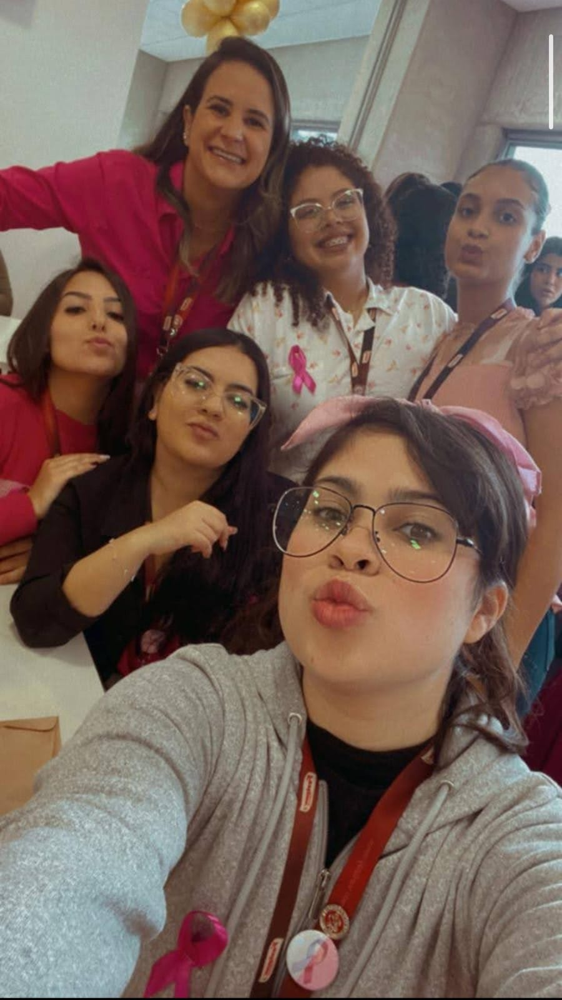
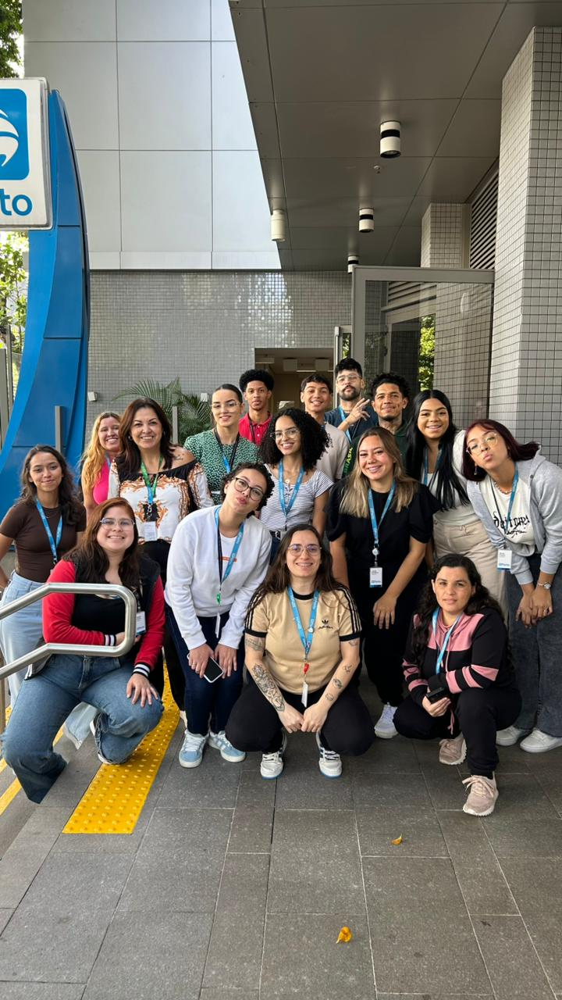
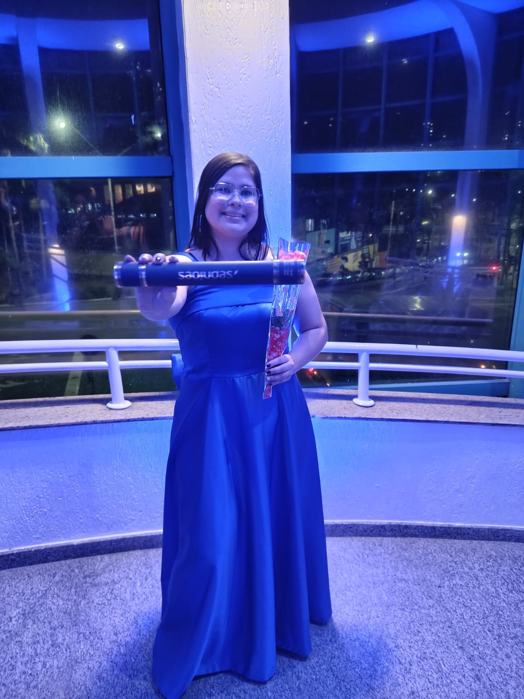
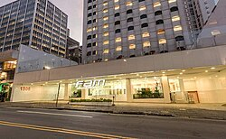

Samyra Oliveira
Portfólio profissional
Sobre mim
Me chamo Samyra, tenho 21 anos e moro em Mauá, sou formada em Análise e Desenvolvimento de Sistemas pela USJT, iniciei minha segunda graduação em Ciência da Computação pela FAM e estou concorrendo a uma bolsa de estudos de MBA na USP. Atualmente estudo AWS para tirar a certificação e faço um curso pela Udemy de Java completo para me aprofundar na linguagem. Nas horas vagas tento estudar um pouco ou ler um livro, mas as vezes me surge eventos para fotografar e eu vou, sou fotografa, tiro foto como uma renda a mais. Sou Estágiaria de Infraestrutura em TI na Grau Tecnico em Mauá, está sendo uma experiencia fantástica, pois era um sonho conseguir um estágio em TI. Sempre busco me aperfeiçoar e me manter atualizada sobre a tecnologia, com intuito de sempre evoluir e ter aprendizado continuo.
Experiência
Festpan Alimentos 02/2022 até 06/2023 como aprendiz de RH, Fui efetivada na área de Logística 06/2023 até 12/2023
Porto Seguro 10/2025 até 01/2026, Fui aprendiz de Call Center da Central de Atendimento Auto e RE
Grau Tecnico 01/2026 - Atual, Sou Estágiaria de Infraestrutura em TI



Formação
Sou formada em Tecnólogo Análise e Desenvolvimento de Sistemas pela Universidade São Judas Tadeu, 01/2023 até 06/2025.
Bacharelado em Ciência da Computação pela FAM Centro Universitário, 01/2026 até 12/2029.


Eventos
Primeiro evento foi na B³, onde teve muitas palestras acontecendo ao mesmo tempo, eu fui em uma que falavam sobre mulheres na tecnologia.
Fui pela primeira vez no escritorio da Google na Faria Lima, foi incrível, a palestra era sobre Data Analytics & AI Community Brazil
E nunca imaginei, mas tudo e possível, consegui ir ao evento do Google Cloud Summit Developer, Foi uma experiencia maravilhosa, tive network com muita gente, teve dinamicas onde ganhava brinde foi muito legal.